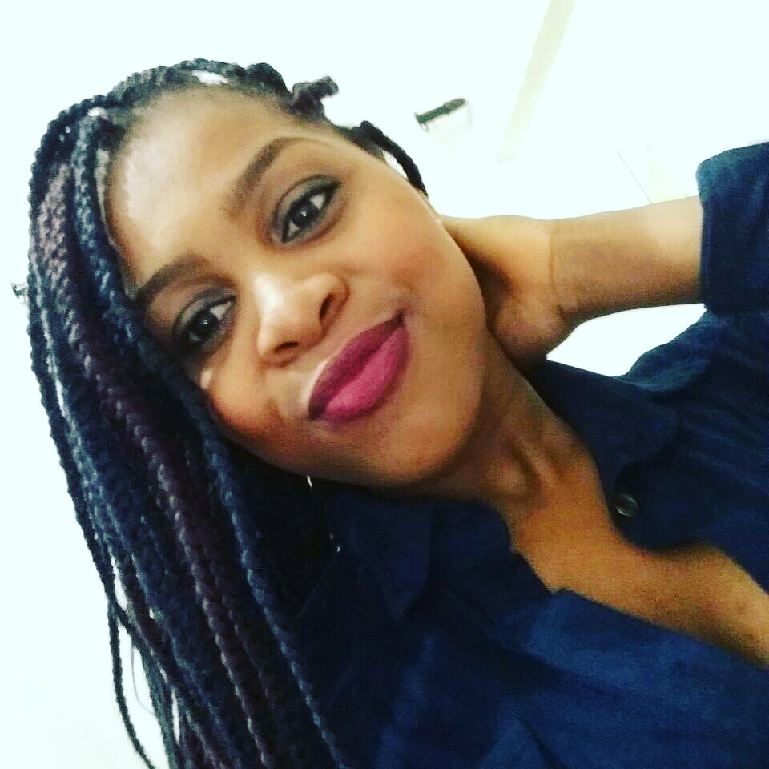

<nav class="navbar navbar-expand-lg navbar-light bg-secondary">
    <div class="container-fluid">
  
      <button class="navbar-toggler" type="button" data-bs-toggle="collapse" data-bs-target="#navbarSupportedContent"
        aria-controls="navbarSupportedContent" aria-expanded="false" aria-label="Toggle navigation">
        <span class="navbar-toggler-icon"></span>
      </button>
      <div class="collapse navbar-collapse" id="navbarSupportedContent">
        <ul class="navbar-nav me-auto mb-2 mb-lg-0 d-flex align-items-center">
          <li class="nav-item active">
            
          </li>
          <li class="nav-item p-lg-3">
            <p class="m-0 fw-bold text-white fs-16"> Mara Jozicleia
            </p>
          </li>
  
          <li class="nav-item">
            <a href="">
              <P class="text-white fs-16 m-0"> <i class="fa fa-pencil-square-o" aria-hidden="true"></i> </P>
            </a>
          </li>
        </ul>
        <ul class="navbar-nav mr-auto mb-2 mb-lg-0 d-flex align-items-center">
  
          <li class="nav-item p-lg-3">
            <button type="button" class="btn btn-secondary">
              <p class="m-0 fw-bold text-white fs-16 ">Sair<a routerLink='/entrar'><i class="fa fa-sign-out p-lg-1" aria-hidden="true"></i></a></p>
            </button>
          </li>
  
        </ul>
      </div>
    </div>
  </nav>